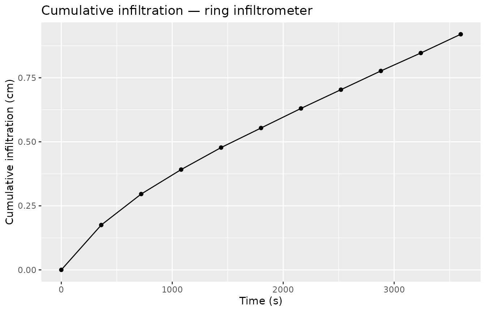
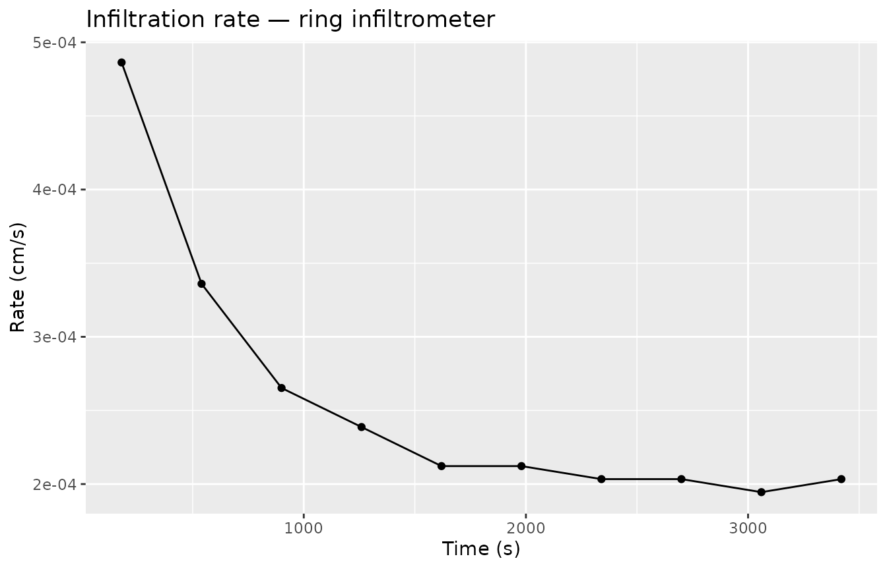
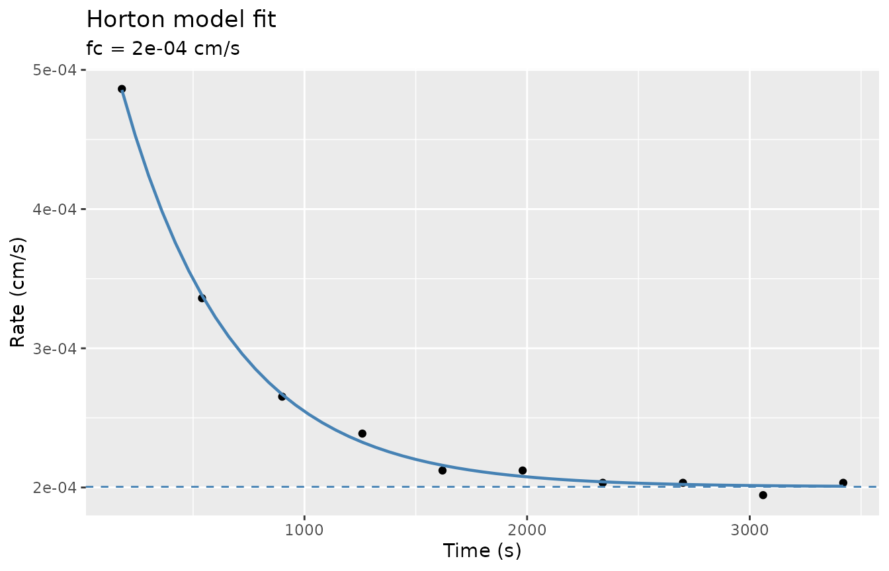

Overview
Standard ponded ring infiltrometers (single- or double-ring) measure how fast water infiltrates at saturation. Three empirical models are available:
| Model | Function | Ksat estimate? | Notes |
|---|---|---|---|
| Philip (1957) two-term | fit_infiltration() |
C₁ ≈ Ksat at steady state | Linearisable; fast |
| Horton (1940) | fit_infiltration_horton() |
fc ≈ Ksat | Requires rates; NLS fit |
| Kostiakov (1932) | fit_infiltration_kostiakov() |
No | Purely empirical power law |
The processing pipeline is:
-
infiltration_cumulative()— convert volume readings to I(t) -
infiltration_rate()— compute interval rates (for Horton) - Fit one or more models to the resulting series
1. Field data
A 10 cm radius ring measured over one hour, reading the reservoir volume (mL) every six minutes.
ring_raw <- tibble(
time = seq(0, 3600, 360), # seconds (0 – 60 min)
volume = c(500, 445, 407, 377, 350, 326, 302, 279, 256, 234, 211) # mL
)
ring_raw
#> # A tibble: 11 × 2
#> time volume
#> <dbl> <dbl>
#> 1 0 500
#> 2 360 445
#> 3 720 407
#> 4 1080 377
#> 5 1440 350
#> 6 1800 326
#> 7 2160 302
#> 8 2520 279
#> 9 2880 256
#> 10 3240 234
#> 11 3600 2112. Cumulative infiltration and rates
ring <- ring_raw |>
infiltration_cumulative(time = time, volume = volume, radius = 10) |>
infiltration_rate(time_col = time, infiltration_col = .infiltration)
ring |> select(time, .infiltration, .rate, .time_mid)
#> # A tibble: 11 × 4
#> time .infiltration .rate .time_mid
#> <dbl> <dbl> <dbl> <dbl>
#> 1 0 0 NA NA
#> 2 360 0.175 0.000486 180
#> 3 720 0.296 0.000336 540
#> 4 1080 0.392 0.000265 900
#> 5 1440 0.477 0.000239 1260
#> 6 1800 0.554 0.000212 1620
#> 7 2160 0.630 0.000212 1980
#> 8 2520 0.703 0.000203 2340
#> 9 2880 0.777 0.000203 2700
#> 10 3240 0.847 0.000195 3060
#> 11 3600 0.920 0.000203 3420The first .rate row is NA — there is no
preceding interval for the initial observation.
ggplot(ring, aes(x = time, y = .infiltration)) +
geom_point() +
geom_line() +
labs(title = "Cumulative infiltration — ring infiltrometer",
x = "Time (s)", y = "Cumulative infiltration (cm)")
ring |>
filter(!is.na(.rate)) |>
ggplot(aes(x = .time_mid, y = .rate)) +
geom_point() +
geom_line() +
labs(title = "Infiltration rate — ring infiltrometer",
x = "Time (s)", y = "Rate (cm/s)")
3. Philip two-term fit
philip <- fit_infiltration(ring,
infiltration_col = .infiltration,
sqrt_time_col = .sqrt_time)
philip
#> # A tibble: 1 × 5
#> .C2 .C1 .C2_std_error .C1_std_error .convergence
#> <dbl> <dbl> <dbl> <dbl> <lgl>
#> 1 0.00764 0.000129 0.000336 0.00000509 TRUEC₁ (1.29^{-4} cm/s) is a proxy for Ksat under ponded conditions; C₂ (0.00764 cm/s^0.5) is the sorptivity proxy.
4. Horton model
The Horton (1940) model fits an exponential decay to the infiltration rate series:
where fc ≈ Ksat.
horton <- fit_infiltration_horton(ring,
rate_col = .rate,
time_col = .time_mid)
horton
#> # A tibble: 1 × 7
#> .fc .f0 .k .fc_std_error .f0_std_error .k_std_error .convergence
#> <dbl> <dbl> <dbl> <dbl> <dbl> <dbl> <lgl>
#> 1 0.000200 6.11e-4 0.00202 0.00000209 0.00000947 0.0000757 TRUEThe Horton estimates: fc = 2^{-4} cm/s ≈ Ksat, f0 = 6.11^{-4} cm/s (initial rate), k = 0.002025 s⁻¹ (decay constant).
Visualise the fitted curve:
# Predicted rate curve over the observed time range
t_pred <- seq(180, 3420, 60)
pred_horton <- tibble(
time = t_pred,
rate = horton$.fc + (horton$.f0 - horton$.fc) * exp(-horton$.k * t_pred)
)
ring |>
filter(!is.na(.rate)) |>
ggplot(aes(x = .time_mid, y = .rate)) +
geom_point() +
geom_line(data = pred_horton, aes(x = time, y = rate),
colour = "steelblue", linewidth = 0.8) +
geom_hline(yintercept = horton$.fc, linetype = "dashed", colour = "steelblue") +
labs(title = "Horton model fit",
subtitle = paste0("fc = ", signif(horton$.fc, 3), " cm/s"),
x = "Time (s)", y = "Rate (cm/s)")
5. Kostiakov model
The Kostiakov (1932) power model fits cumulative infiltration:
Note that the Kostiakov model does not approach a finite steady-state rate, so it cannot provide a Ksat estimate.
kostiakov <- fit_infiltration_kostiakov(ring,
infiltration_col = .infiltration,
time_col = time)
kostiakov
#> # A tibble: 1 × 5
#> .a .b .a_std_error .b_std_error .convergence
#> <dbl> <dbl> <dbl> <dbl> <lgl>
#> 1 0.00269 0.712 0.000120 0.00570 TRUE6. Multi-site workflow
Group the raw data by site and fit all three models in a single
pipeline using group_by().
multi_ring <- tibble(
site = rep(c("Field_1", "Field_2"), each = 11),
time = rep(seq(0, 3600, 360), 2),
volume = c(
500, 445, 407, 377, 350, 326, 302, 279, 256, 234, 211, # loam
500, 404, 349, 308, 271, 237, 202, 168, 134, 100, 66 # sandy loam
)
)
# Cumulative + rate in one pass
multi_cum <- multi_ring |>
group_by(site) |>
infiltration_cumulative(time = time, volume = volume, radius = 10) |>
infiltration_rate(time_col = time, infiltration_col = .infiltration)
# Philip fit
multi_philip <- multi_cum |>
group_by(site) |>
fit_infiltration(infiltration_col = .infiltration,
sqrt_time_col = .sqrt_time)
multi_philip
#> # A tibble: 2 × 6
#> site .C2 .C1 .C2_std_error .C1_std_error .convergence
#> <chr> <dbl> <dbl> <dbl> <dbl> <lgl>
#> 1 Field_1 0.00764 0.000129 0.000336 0.00000509 TRUE
#> 2 Field_2 0.0128 0.000166 0.000547 0.00000829 TRUE
# Horton fit
multi_horton <- multi_cum |>
group_by(site) |>
fit_infiltration_horton(rate_col = .rate, time_col = .time_mid)
multi_horton |> select(site, .fc, .f0, .k, .convergence)
#> # A tibble: 2 × 5
#> site .fc .f0 .k .convergence
#> <chr> <dbl> <dbl> <dbl> <lgl>
#> 1 Field_1 0.000200 0.000611 0.00202 TRUE
#> 2 Field_2 0.000295 0.00124 0.00294 TRUEReferences
Horton, R. E. (1940). An approach toward a physical interpretation of infiltration capacity. Soil Science Society of America Proceedings, 5, 399–417.
Kostiakov, A. N. (1932). On the dynamics of the coefficient of water-percolation in soils. Transactions of the 6th Commission of the International Society of Soil Science, Part A, 17–21.
Philip, J. R. (1957). The theory of infiltration: 4. Sorptivity and algebraic infiltration equations. Soil Science, 84(3), 257–264.